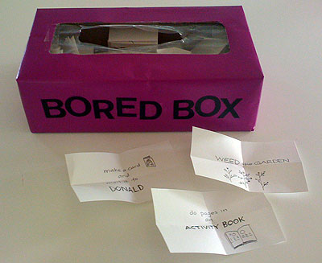

The Bored Box

I have memories of whining to my Mom, "Mooooomm, I don't have anything to do," to which she invariably responded "Take off your sock and spit in your shoe" (yeah, I never got it either). Sure, good for a giggle, but a pretty frustrating dead-end to a bored five-year-old.
Well, what goes around comes around, and recently Arlo has started complaining "I'm BORED!" with all the attitude of a sullen teenager. I had never heard him complain of boredom before, and I suddenly had more sympathy for my mother (and believe me, this is just one of the countless ways). Of course I delighted in responding with my mom's old line, but I also wanted to help him find something fun to do that would unearth some of those begged-for-then-forgotten toys filling his closet and, yes, to get him off my back for 15 minutes. Unfortunately, he kicked most of my suggestions to the curb, so instead of having my bright ideas poo-poo'd in rapid fire, I decided to turn them into a game of chance, with rules for play. Thus was born the BORED BOX.
How It's Made
I started by looking around his room and the house and writing activity suggestions on slips of paper. Good activities are those he can do alone (other than a little help with setup) and will keep him busy for 10-15 minutes. It was amazing how many suggestions I came up with once I got started (I'm at 40 and counting!). To keep the game interesting, I threw in a few easy, age-appropriate chores (weed the garden, organize the tupperware), but I also have a small supply of new books and craft kits that he's never seen before, so there's always the chance of getting a new toy. The box itself is just a tissue box covered in wrapping paper and some press-on vinyl letters I've been hoarding since 7th grade (but that's another story).
The Rules
I've come up with a set of basic rules for using the Bored Box, although, they may need to be tweaked as we become more experienced with the system. For starters, they are:
- You have to do the thing you choose for at least 15 minutes (I'll set a timer.)
- If you do not want to do the thing you chose, you have to find your own thing to do for 15 minutes.
- Mom and Dad have the right to veto a choice for any reason.
Most slips (with the exception of ones tied to new toys) will get put back in the box and reused. I'm considering putting a limit on how many slips you can pull in a day (3 or 4?), and I may end up allowing one "do-over" allowing him to return a slip and draw again in a day. We'll see how it goes.
The Contents
Here's my initial list of activity suggestions. Because my son is really into drawing and making things, ours is a bit arts-n-crafts heavy, but the suggestions could be customized to any kid's interests and back-of-the-cabinet toys.
- Make a BIG drawing
- Play with PLAYDOUGH
- Play with the EYE-CLOPS
- Play with PLAY FOAM
- Sing a little KARAOKE
- Make some ALIENS
- Write a STORY & make a BOOK
- Draw with OIL PASTELS
- Draw with KID PIX
- Draw with KALEIDODRAW
- Look at ONE MORE STORY.com
- Go to PBSkids.com
- Make a paper-bag PUPPET
- Organize the TUPPERWARE
- Play with PIXEL BLOCKS
- Make a SKULL out of something
- Make a COLLAGE
- Look thru the LITTLE TOY box (get rid of 5 things)
- Weed the GARDEN
- Play with NEW FLARP!
- Make a NEW CRAFT!
- Make a CARD & mail it to DONALD
- Make a CARD & mail it to GRAMMA & PAP-PAP
- Make a CARD & mail it to NANA & PAPASAN
- Make a CARD & mail it to GRAND-DAD & ZAIDA
- Do pages in an ACTIVITY BOOK
- Take a BATH!
- Look at an ANATOMY BOOK (pick something and draw it or sculpt it as well as you can)
- Listen to MUSIC in HEADPHONES
- Play with Crayola GLOW BOARD
- Make something with PIXOS
- Make a BRACELET (or 2)
- Play with LEGO blocks (any size)
- Play with FACE PAINT
- Play PERFECTION
- Make ROCKIN' ROBOTS
- Paint the SOCCER BALL (craft kit)
- Draw with your NEW Ed Emberley BOOK
No more taking off socks and spitting in shoes in this house. Now I can't wait for him to get bored!